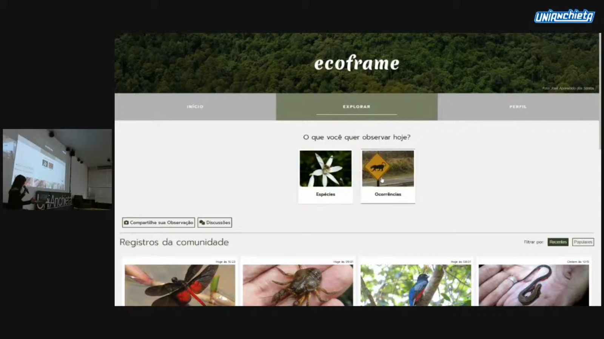
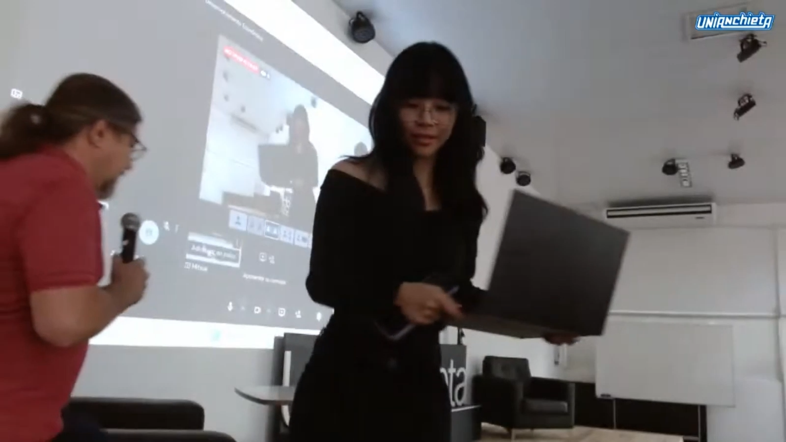

Desenvolvido como uma solução de ciência cidadã, o EcoFrame foi apresentado no evento Fatec Portas Abertas e gerou um artigo científico publicado no livro "Ciência, Tecnologia e Cultura na Praça - Volume 4"
Dica: Você pode arrastar o canto inferior direito do visualizador para mudar o tamanho.Além disso, o projeto foi convidado para o painel "Ciclo de Debates - Sustentabilidade e Desenvolvimento Econômico" no UniAnchieta, servindo de exemplo prático de tecnologia voltada à preservação ambiental.

